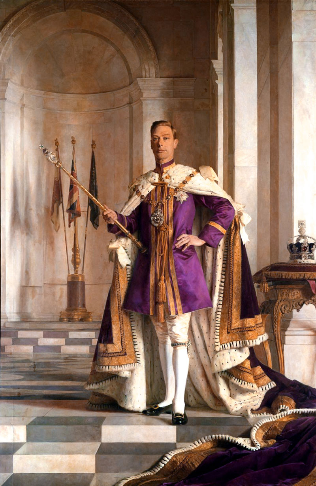

All about Nidavellir
Nidavellir has been alive for more than 500000 years. Through out the years the planet has grown more in population and buildings.
Nobody knows who created the planet or if it created itself
but what we do know is the history of the planet and anything else you need to know.


These places are two different places that has existed for 30000 years called "Natures Valley" and "Spirit arena" which right outside the planet.
Natures Valley is quite far away from the main city so you must
travel by the flying train. These places are Historic in Nidavellir that you must visit while you are here,
but be careful with the "Golbers" which are creatures that live in the planet on the right.
Historic fountains and rivers
The fountain on the right is one of the most Historic water
fountain known to Nidavellir. This can be found in the main center of the city,
it is a very big part of the city because it was founded by the villagers that lived here in the past.
The river on the left is the most calming and famous river that has been in the planet for decades.
It is located in Natures Valley and has the most beautiful view of the sunset there could ever be.

The founder of Nidavellir

